Build 93 Recovery — locked design vs correction candidate
Left: Founder-locked 2026-10-04 boards (crops of the four locked images on main). Right: the correction candidate's shipping SwiftUI on the iOS Simulator with the DEBUG review fixture (synthetic data, no Founder Sleep, not a device capture). The fixture flag and the Confidence-coupling note are review-fixture marks only and never ship.
Weekly · Dark
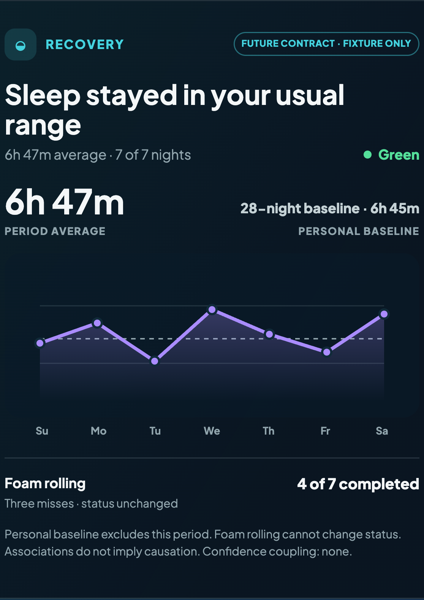
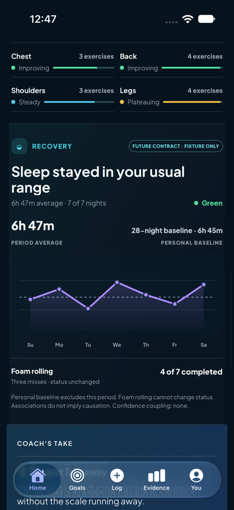
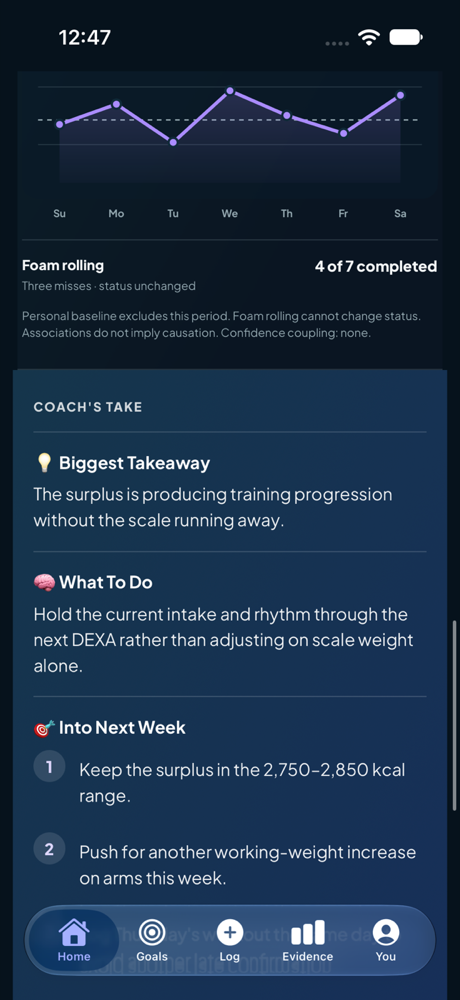
Weekly · Mineral Light (rich field)
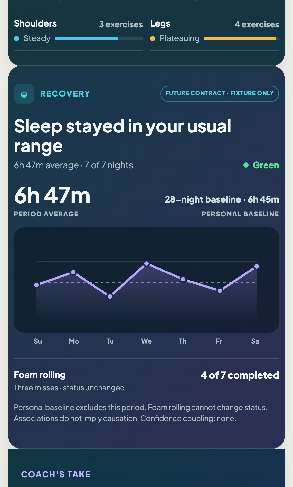
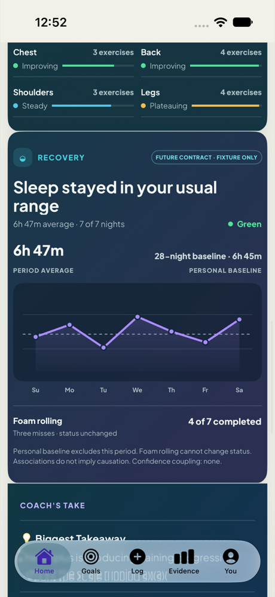
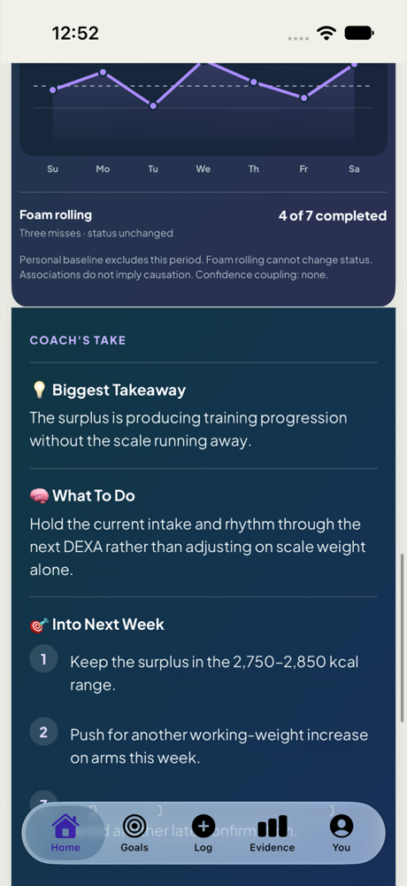
Monthly · Dark
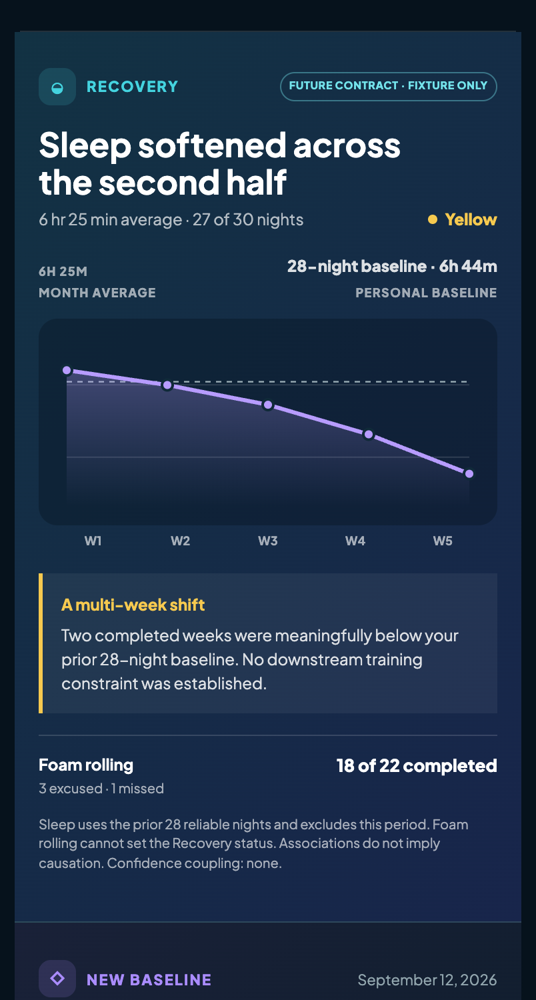
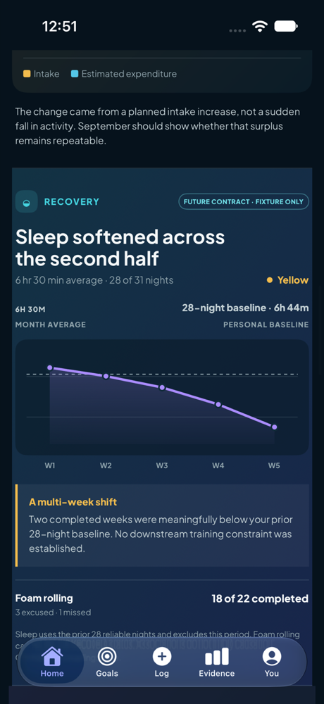
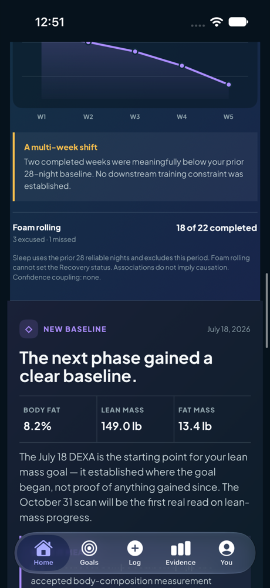
Monthly · Mineral Light
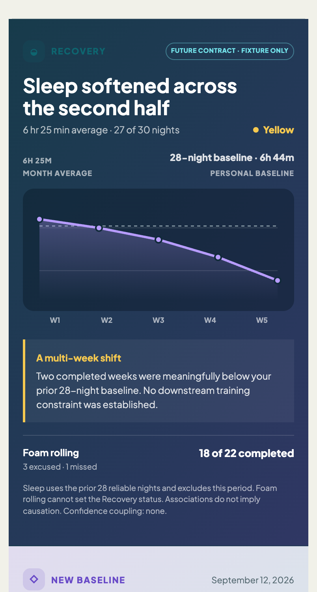
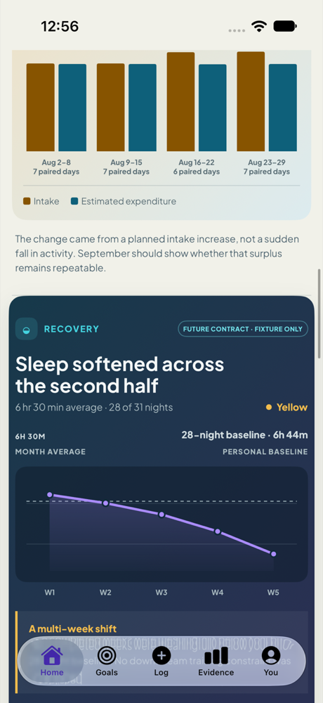
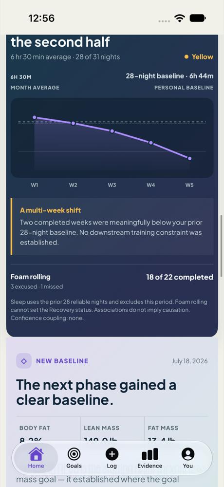